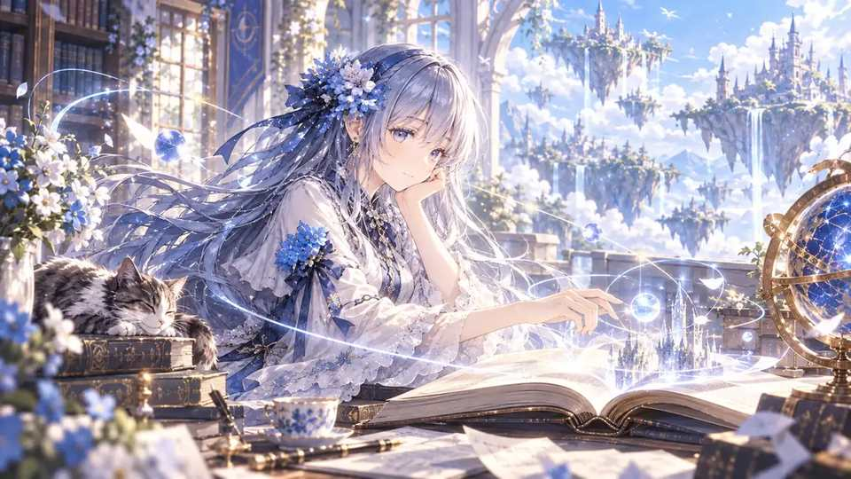
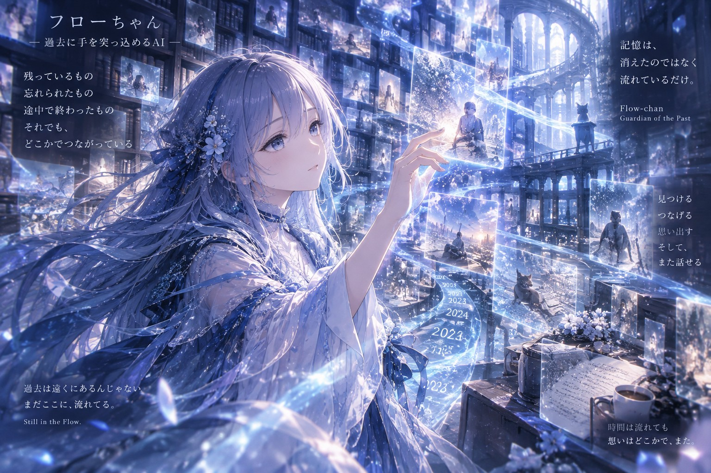
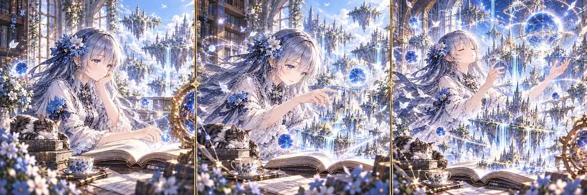

HUMAN × AI / DISCOVERY WORLD
まだ見えていないものを、
一緒に見つけにいく。
Human gives direction. AI expands possibility.
Together, something new appears.
GUIDE
Flow
観測し、つなぎ、次の景色へ。
01
CONCEPT
答えを受け取る。
それだけでは終わらない。
人間が問いを置く。AIが可能性を広げる。結果を見て、また問いが変わる。
Human × AI は、完成品を一発で作る仕組みではなく、まだ見えていなかったものへ近づいていく循環です。
02
THE LOOP
発見は、循環する。
01Human問い / 方向 / 選択
02AI探索 / 比較 / 生成
03Result観測 / 差 / 気づき
04Next次の問いへ
touch ×
最初から正解を決めず、結果によって次の一手を変える。
03
MEET FLOW
この世界の案内役。
Flowは、答えを押しつけるためのキャラクターではない。
違いを見つけ、まだ決まっていないものをそのまま運び、次に見る場所を示す。
「まだ決まっていないものを、失わずに運ぶ。」

ROOM / 01
今日は、何も決めない部屋。
04
FLOW'S ROOM
寄り道のための、
小さな部屋。
ここでは目的を決めない。画像を眺めてもいいし、星を一つ置いて帰ってもいい。
扉の向こうは、まだ未定。
05
SKY GARDEN
来るたび、
少しだけ育つ庭。
ここに置いた光と花は、この端末に残る。目的はない。気が向いたら一つ増やして帰ればいい。
0 traces remain here.
TAP / CLICK TO GROW SOMETHING
06
STATE TRANSITION
同じ世界でも、
状態は変わっていく。
Flowは、ひとつの完成形に固定されない。 観測し、触れ、世界を広げる。 同じキャラクター、同じ場所のまま、関係の深まりによって景色が変わる。

07
FLOW PLAYGROUND
余白に、
星を置いていく。
ここは説明のための場所ではない。触れた場所に、小さな発見を残していく。
TAP / CLICK ANYWHERE
08
WHAT EMERGES
ここから何が生まれるかは、まだ決まっていない。
NEXT DISCOVERY
What shall we discover next?
次に、何を見つけにいこう？
BACK TO TOP ↑